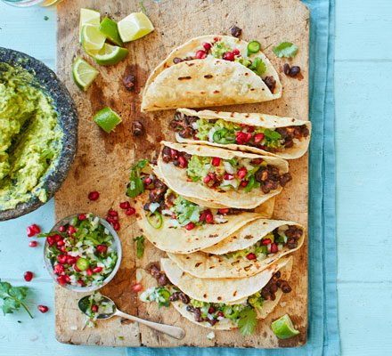

Black Bean Tacos

Description
Vegetarian bean tacos, lightly spiced with cumin and smoked paprika
Ingredients
- 1 tbsp vegetable oil
- 3 garlic cloves, chopped
- 3 x 400g cans black beans, drained and rinsed
- 3 tbsp cider vinger
- 1.5 tbsp honey
- 1.5 tbsp smoked paprika
- 1.5 tbsp ground cumin
Steps
- In a large frying pan, heat the oil and add the garlic. Fry until golden, then add the beans
- Pour in the cider vinegar, honey and spices along with 1 tsp or more of salt, to taste
- Cook until warmed through, crushing gently with the back of your wooden spoon
- To serve, put 1-2 heaped tbsp of beans on a tortilla